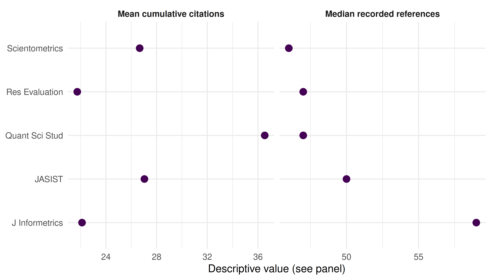

11 Journal Metrics
R. Heller · Date: 2026-05-09 · Last changed: 2026-10-31
11.1 Learning objectives
After completing this chapter, you will be able to:
- Explain the citation windows and data requirements of JIF, CiteScore and SNIP
- Explain why network-based journal metrics differ from simple citation ratios
- Summarise current cumulative citations and recorded references in journal cohorts
- Distinguish those descriptive summaries from official journal metrics
- Evaluate journals using appropriate evidence rather than a single number
11.3 Conceptual background
Journal-level metrics summarise particular aspects of a journal’s citation record. The two-year Journal Impact Factor (JIF) for year t counts citations received in year t to the journal’s content from years t-1 and t-2, divided by its citable items from those two publication years. The numerator can include citations to document types excluded from the denominator. The citation year, publication cohort and document-type rules are distinct parts of the definition; see Clarivate’s calculation explanation.
CiteScore uses a four-year publication window and counts citations received within that same four-year interval. Its eligible document types include articles, reviews, conference papers, book chapters and data papers in both the numerator and denominator; it does not simply include every document type. See Elsevier’s metric definitions.
SNIP (Source-Normalized Impact per Paper) adjusts for citation practices using information from the citing side, with specified reference and weighting rules. It is not a journal’s citation average divided by the median reference count in its own papers. The revised method is described by Waltman et al. (2013). SJR (SCImago Journal Rank) and Eigenfactor use citation networks to weight citations according to their source; a simple citation count does not reproduce those network calculations (Waltman 2016).
The published indicators use specified database coverage, document eligibility, time windows and methods. An alternative calculation needs its own explicit definition and validation (Visser et al. 2021). The OpenAlex example below computes current cumulative citation and recorded-reference summaries only. It neither implements nor estimates JIF, CiteScore, SNIP, SJR or Eigenfactor.
DORA (American Society for Cell Biology 2012) warns against using a journal metric as a measure of an individual article’s quality. Journal averages cannot establish the quality of a particular paper, and citation distributions within journals can be highly uneven (Hicks et al. 2015).
11.4 Worked example
11.4.1 Selecting journals
We use five journals in information science and research evaluation. Source identities were checked against OpenAlex on 30 October 2026. The JASIST record below is the current Journal of the Association for Information Science and Technology, appropriate to the 2021–2022 publication cohort; historical titles can have separate source records.
journals <- tribble(
~short_name, ~source_id,
"Scientometrics", "S148561398",
"J Informetrics", "S205292342",
"Quant Sci Stud", "S4210195326",
"JASIST", "S4210197613",
"Res Evaluation", "S16793705"
)11.4.2 Fetching a publication cohort
Fetch records classified as articles and published in 2021–2022. Their
cited_by_count values are cumulative citations at retrieval, not citations
received in a specified historical year. The query restricts publication dates;
it does not restrict the dates on which citations were received. Results describe
the retrieved records and require coverage checks before being treated as complete
journal output.
fetch_journal_works <- function(source_id, from_year, to_year) {
res <- fetch_openalex(
entity = "works",
primary_location.source.id = source_id,
from_publication_date = paste0(from_year, "-01-01"),
to_publication_date = paste0(to_year, "-12-31"),
type = "article"
)
if (!is.data.frame(res) || !nrow(res)) {
stop(glue("No usable records for {source_id}; check the query and provider response before comparing journals."))
}
res
}
journal_works <- journals |>
mutate(data = map(source_id, \(sid) fetch_journal_works(sid, 2021, 2022)))Provider errors propagate instead of being converted to zero publications or citations. An empty result stops the worked comparison; it is not evidence that a journal has no output.
11.4.3 Cumulative citation summaries
The citation mean uses only observed citation counts, with that denominator reported. Missing counts are not zero. A total over observed values is not a complete journal total when records or counts are missing.
summarise_journal_records <- function(d) {
required <- c("id", "cited_by_count", "referenced_works_count")
if (!is.data.frame(d) || !nrow(d) || !all(required %in% names(d))) {
stop("Journal summaries need nonempty records with IDs, citation counts and reference counts.")
}
if (anyNA(d$id) || any(!nzchar(d$id)) || anyDuplicated(d$id)) {
stop("Journal work IDs must be present and unique.")
}
for (column in c("cited_by_count", "referenced_works_count")) {
values <- d[[column]]
if (!is.numeric(values) || any(!is.na(values) & (!is.finite(values) | values < 0))) {
stop("Citation and reference counts must be finite nonnegative numbers or missing.")
}
}
citations <- d$cited_by_count[!is.na(d$cited_by_count)]
references <- d$referenced_works_count[!is.na(d$referenced_works_count)]
tibble(
n_articles = nrow(d), n_citations_observed = length(citations),
observed_citation_sum = if (length(citations)) sum(citations) else NA_real_,
mean_cumulative_citations = if (length(citations)) mean(citations) else NA_real_,
median_cumulative_citations = if (length(citations)) median(citations) else NA_real_,
n_references_observed = length(references),
median_recorded_references = if (length(references)) median(references) else NA_real_
)
}
journal_summary <- journal_works |>
mutate(summary = map(data, summarise_journal_records)) |>
unnest(summary) |>
select(-data) |>
arrange(short_name)
journal_summary |>
select(short_name, n_articles, n_citations_observed, observed_citation_sum,
mean_cumulative_citations, median_cumulative_citations) |>
gt() |>
fmt_number(columns = c(mean_cumulative_citations, median_cumulative_citations), decimals = 2) |>
cols_label(short_name = "Journal", n_articles = "Retrieved articles (2021–22)",
n_citations_observed = "Observed citation counts",
observed_citation_sum = "Sum of observed cumulative citations",
mean_cumulative_citations = "Mean cumulative citations",
median_cumulative_citations = "Median cumulative citations")| Journal | Retrieved articles (2021–22) | Observed citation counts | Sum of observed cumulative citations | Mean cumulative citations | Median cumulative citations |
|---|---|---|---|---|---|
| J Informetrics | 185 | 185 | 4091 | 22.11 | 17.00 |
| JASIST | 211 | 211 | 5705 | 27.04 | 17.00 |
| Quant Sci Stud | 128 | 128 | 4676 | 36.53 | 14.00 |
| Res Evaluation | 84 | 84 | 1826 | 21.74 | 14.00 |
| Scientometrics | 747 | 747 | 19917 | 26.66 | 15.00 |
11.4.4 Recorded reference counts
referenced_works_count describes the references recorded for the fetched
journal articles. It is not the reference-list information for papers citing
those articles, and it need not capture every reference in the original texts.
We report it separately rather than dividing citations by it or calling it
citation potential.
journal_summary |>
select(short_name, n_articles, n_references_observed, median_recorded_references) |>
gt() |>
cols_label(short_name = "Journal", n_articles = "Retrieved articles",
n_references_observed = "Observed reference counts",
median_recorded_references = "Median recorded references")| Journal | Retrieved articles | Observed reference counts | Median recorded references |
|---|---|---|---|
| J Informetrics | 185 | 185 | 59 |
| JASIST | 211 | 211 | 50 |
| Quant Sci Stud | 128 | 128 | 47 |
| Res Evaluation | 84 | 84 | 47 |
| Scientometrics | 747 | 747 | 46 |
11.4.5 Visualization
combined <- journal_summary |>
select(short_name, mean_cumulative_citations, median_recorded_references) |>
pivot_longer(-short_name, names_to = "summary", values_to = "value") |>
mutate(summary = recode(summary,
mean_cumulative_citations = "Mean cumulative citations",
median_recorded_references = "Median recorded references"))
ggplot(combined, aes(x = value, y = short_name)) +
geom_point(size = 3, colour = palette_sci(1)) +
facet_wrap(~ summary, scales = "free_x") +
labs(x = "Descriptive value (see panel)", y = NULL) +
theme_sci()
Figure 11.1: Current cumulative citations and recorded references for the retrieved 2021–2022 article cohorts, shown as separate descriptive quantities.
11.5 Diagnostics and interpretation
- Coverage: Report source IDs, publication filters, retrieval dates and the number of retrieved records. Reconcile these with the intended corpus before interpreting output counts.
- Missing data: Compare the retrieved-record count with each observed denominator. An all-missing citation column produces missing summaries, not a zero-citation journal.
- Time: Older papers have had longer to accumulate citations. A publication-date filter cannot create an annual citation window from a current cumulative count.
- Scope: References in the journal’s own articles describe those records; they do not supply the citing-side data needed for SNIP.
- Comparisons: Differences can reflect field mix, document classification, coverage and citation exposure. Agreement between descriptive rankings does not validate an official metric or justify an evaluation decision.
11.7 Limitations and responsible use
- Journal summaries are not article-quality measures. Means can conceal skewed citation distributions and do not establish a particular paper’s quality (American Society for Cell Biology 2012).
- Targets can distort behaviour. Citation stacking, coercive citation and denominator manipulation are risks when metrics become targets (Goodhart 1984).
- These are descriptive snapshots. They are not JIF, CiteScore, SNIP or substitutes for those indicators. Reusing a familiar label does not supply the missing citation windows or methodology.
- Field dependence and metadata coverage remain. The example performs no field normalisation and cannot establish a fair ranking across disciplines (Waltman 2016).
11.9 Common pitfalls
- Relabeling cumulative citations as annual citations. JIF needs citations received in one specified year to the preceding two publication years.
- Using the wrong side of a citation link. The cited journal’s own reference counts do not describe the reference lists of its citing works.
- Treating absence as zero. Failed requests, empty responses and missing values require explicit handling before computing a denominator.
- Ranking journals by a single number. Indicator definitions, distributions, coverage and disciplinary context matter alongside any numerical comparison.
11.10 Exercises
Cohort sensitivity. Fetch 2019–2022 articles for one of the verified source IDs and compare their cumulative citation summary with the 2021–2022 cohort. Explain why widening the publication cohort does not compute CiteScore.
Descriptive association. Compute Spearman correlation between the journal means of cumulative citations and medians of recorded references, using complete pairs. Explain why any association does not validate SNIP or establish field normalisation.
Missing-data denominator. For three invented records with citation counts 0, 20 and missing, calculate the observed citation sum and mean using the helper. Compare that mean with dividing the observed sum by all three records. Also check a cohort whose citation counts are all missing.
Self-citation design. Specify the citation edges, citing-journal identities, time window and denominator needed to measure a journal self-citation share. Explain why the fetched cumulative counts and reference counts are insufficient.
11.11 Solutions
Solutions are provided in E.
11.12 Further reading
- Garfield (1955) — The original proposal for citation indexes.
- Waltman (2016) — Review of citation impact indicators and their data requirements.
- Clarivate’s JIF calculation and Elsevier’s metric definitions — Provider definitions of citation windows and eligible documents.
- Waltman et al. (2013) — The revised SNIP methodology.
- Hicks et al. (2015); American Society for Cell Biology (2012) — Responsible use of journal-level metrics.
- Visser et al. (2021) — Database coverage differences.
- Priem et al. (2022) — OpenAlex as an open bibliographic data source.
11.13 Session info
#> R version 4.6.1 (2026-06-24)
#> Platform: x86_64-pc-linux-gnu
#> Running under: Ubuntu 24.04.5 LTS
#>
#> Matrix products: default
#> BLAS: /usr/lib/x86_64-linux-gnu/openblas-pthread/libblas.so.3
#> LAPACK: /usr/lib/x86_64-linux-gnu/openblas-pthread/libopenblasp-r0.3.26.so; LAPACK version 3.12.0
#>
#> locale:
#> [1] LC_CTYPE=C.UTF-8 LC_NUMERIC=C LC_TIME=C.UTF-8
#> [4] LC_COLLATE=C.UTF-8 LC_MONETARY=C.UTF-8 LC_MESSAGES=C.UTF-8
#> [7] LC_PAPER=C.UTF-8 LC_NAME=C LC_ADDRESS=C
#> [10] LC_TELEPHONE=C LC_MEASUREMENT=C.UTF-8 LC_IDENTIFICATION=C
#>
#> time zone: UTC
#> tzcode source: system (glibc)
#>
#> attached base packages:
#> [1] stats graphics grDevices utils datasets methods base
#>
#> other attached packages:
#> [1] quanteda_4.5.1 pdftools_3.9.1 arrow_26.0.0 bibliometrix_5.5.0
#> [5] RefManageR_1.4.0 bib2df_1.1.2.0 rcrossref_1.2.1 gt_1.4.0
#> [9] tidytext_0.4.3 glue_1.8.1 openalexR_3.1.2 lubridate_1.9.5
#> [13] forcats_1.0.1 stringr_1.6.0 dplyr_1.2.1 purrr_1.2.2
#> [17] readr_2.2.0 tidyr_1.3.2 tibble_3.3.1 ggplot2_4.0.3
#> [21] tidyverse_2.0.0
#>
#> loaded via a namespace (and not attached):
#> [1] gridExtra_2.3.1 httr2_1.3.0 readxl_1.6.0
#> [4] rlang_1.3.0 magrittr_2.0.5 otel_0.2.0
#> [7] compiler_4.6.1 vctrs_0.7.3 httpcode_0.3.0
#> [10] pkgconfig_2.0.3 fastmap_1.2.0 labeling_0.4.3
#> [13] ca_0.72 utf8_1.2.6 promises_1.5.0
#> [16] rmarkdown_2.32 tzdb_0.5.0 bit_4.6.0
#> [19] xfun_0.62 cachem_1.1.0 jsonlite_2.0.0
#> [22] SnowballC_0.7.1 later_1.4.8 parallel_4.6.1
#> [25] stopwords_2.3 R6_2.6.1 bslib_0.12.0
#> [28] stringi_1.8.9 RColorBrewer_1.1-3 cellranger_1.1.0
#> [31] jquerylib_0.1.4 assertthat_0.2.1 Rcpp_1.1.2
#> [34] bookdown_0.48 knitr_1.52 triebeard_0.4.1
#> [37] base64enc_0.1-6 rentrez_1.2.4 httpuv_1.6.17
#> [40] Matrix_1.7-5 igraph_2.3.4 timechange_0.4.0
#> [43] tidyselect_1.2.1 stringdist_0.9.17 pubmedR_1.0.2
#> [46] rstudioapi_0.19.0 yaml_2.3.12 viridis_0.6.5
#> [49] miniUI_0.1.2 humaniformat_0.6.0 curl_8.1.0
#> [52] qpdf_1.4.1 lattice_0.22-9 plyr_1.8.9
#> [55] shiny_1.14.0 withr_3.0.3 S7_0.2.2
#> [58] askpass_1.2.1 evaluate_1.0.5 zip_3.0.2
#> [61] xml2_1.6.0 shinycssloaders_1.1.0 pillar_1.11.1
#> [64] janeaustenr_1.0.0 DT_0.34.0 plotly_4.12.1
#> [67] generics_0.1.4 rprojroot_2.1.1 hms_1.1.4
#> [70] scales_1.4.0 xtable_1.8-8 contentanalysis_1.1.1
#> [73] tools_4.6.1 data.table_1.18.6.1 tokenizers_0.3.0
#> [76] openxlsx_4.2.9 XML_3.99-0.25 fs_2.1.0
#> [79] visNetwork_2.1.4 fastmatch_1.1-8 grid_4.6.1
#> [82] bibtex_0.5.3 urltools_1.7.3.1 rscopus_0.9.0
#> [85] dimensionsR_0.0.3 bibliometrixData_0.3.0 cli_3.6.6
#> [88] viridisLite_0.4.3 downlit_0.4.5 gtable_0.3.6
#> [91] sass_0.4.10 digest_0.6.39 ggrepel_0.9.8
#> [94] crul_1.6.0 htmlwidgets_1.6.4 farver_2.1.2
#> [97] memoise_2.0.1 htmltools_0.5.9 lifecycle_1.0.5
#> [100] httr_1.4.9 here_1.0.2 mime_0.13
#> [103] bit64_4.8.6